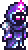
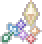
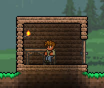
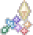
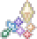

The first thing you have to do is create a character and then the world. Both can be personalized, but the
options for the world are more important because you select the difficulty and one of the two types of evil
biomes (your worst enemy), each having different mobs and bosses. After creating your world, the journey
begins. Terraria is separated into two phases: pre-hardmode and hardmode. As the name suggests, one is
harder. So, pre-hardmode will teach you the basics to evolve with the help of the first NPC,'the guide'.He will assist you in the initial steps.
The guide
Fighting
The world starts peacefully, but as the night comes, you will understand that fighting is the only possibility.
The game gives the player a copper sword, but exploring and crafting will provide powerful weapons and
accessories. Gearing up with armor and accessories is a significant aspect of the game; it will give you
defense, mobility, and more buffs. There are four types of weapons: melee, ranged, magic, and summoner. Starting
the game, you will use the weapons you find, but quickly, the game shows you that combining armor, accessories,
and weapons there is classes, like the 4 types of weapons having some variants inside the
classes, each with different loadouts.
The 4 Classes
- The meele class
The melee class is a good choice for a first-time player because it combines a very good amount of
damage with a lot of defense, so you don't need to have very good movement skills to dodge attacks from
the bosses as is close combat. In the late game, it has some of the strongest weapons, like the Zenith.
Playing in co-op,
it is a good combo with any of the other classes.
- The ranged class
The ranged class attacks from a distance; you can use bows and guns, both having different ammunition to
combine for various buffs. Ranged armors provide good armor and increased ranged damage, while some
accessories help use less ammunition and boost your ranged damage as well. Being patient and dodging attacks
will enable you to defeat every boss in the game.
- The magic class
Playing as the magic class will be challenging as you have low armor, but you can deal A LOT
of damage,
offering different playstyles with weapons for area damage, tracking enemies, and even lifesteal. There is
mana in the game, so the loadout will give you mana regen and extra mana. This class has one of my favorite
weapons, the Last Prism.

- The summoner class
Summoners create minions to fight for them, and with whips, you can make them focus on one enemy instead of
attacking all the enemies that target the summoner. This class is good for farming and exploring because you
don't have to concentrate on combat. However, for bosses, it will be harder as most of the loadouts for
summoners have very low defense but provide minion damage and increase the number of minions. Combining
these
with accessories for mobility and having good mobility skills, you will beat the bosses.

Other accessories,mounts,potions and buffs
There are accessories that are not only for a specific class and can be helpful in the world, like the Ankh
Shield (makes you immune to most debuffs), and wings for good mobility. There are mounts which are
beneficial for summoners, ranged, and magic players who prefer long distances. Potions make a significant
difference in combat, with some tailored for specific classes and others more general, like the Ironskin
Potion, which gives you 5 defense and is useful for every class. Additionally, buffs can be obtained through
furniture, food, and NPCs.
Building
Building is needed in the game to evolve, but don't worry if you're not a very creative person and your
focus is not in creating nice houses and bases. Why is it needed? Because NPCs who sell great items need
small
houses to live in your base. Also, you still need some shelter to defend yourself from mobs at night and
during events, and for stacking items and blocks in chests that you get from exploring and mining.s
Other players

Me
Exploring
For me the best part of the game, having different biomes in the game needing to comeback in eachone in
different fases of the game to farm one mob to get an item or get a material needed to craft a weapon or armor.
Here is where the pre-harmode and hardmode phases get important because if in pre-harmode there is already
diferent mobs in each biome being very hard ones like the underground desert and the jungle but you will need to
go for a
drop of a craft, in hardmode there will more mobs in every biome and now the caves it will have two different
and very difficult biomes the crimson/corruption or the hallow. One thing that makes the game very interesting
if you like to farm is the % of drops being very low in some items for examplle if you want to craft the Ankh
Shield(already mentioned) you will need 12 accessories some having less than 2.5% of drop from a mob who is
already rare to find, like this one there is more examples and why i like the exploration and farm in game.


 


.gif)